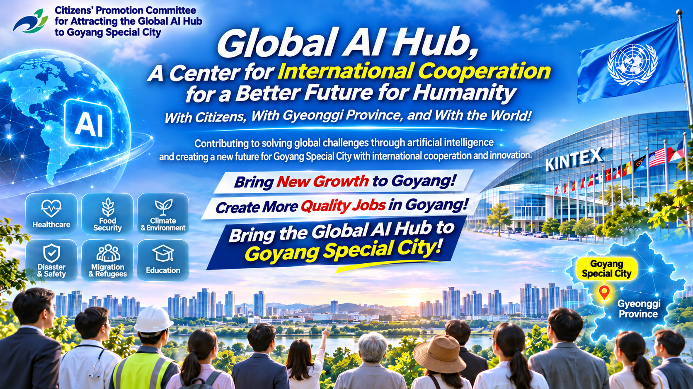

Cooperación internacional para un futuro mejor
Promovemos la cooperación entre organizaciones internacionales, gobiernos, universidades, centros de investigación, empresas y sociedad civil para explorar el potencial de la inteligencia artificial en la solución de los desafíos globales compartidos.
Aspiramos a que la Ciudad Especial de Goyang se convierta en un centro internacional de cooperación en inteligencia artificial, investigación científica e innovación, contribuyendo al desarrollo sostenible y al bienestar de la humanidad.
El Centro Global de Inteligencia Artificial es una iniciativa propuesta para establecer una plataforma internacional de cooperación que combine la experiencia de las organizaciones internacionales con las capacidades de las tecnologías avanzadas de IA.
La iniciativa busca explorar el uso responsable de la inteligencia artificial para abordar desafíos globales en ámbitos como la salud pública, la seguridad alimentaria, el cambio climático, la protección ambiental, la asistencia humanitaria, la migración, el empleo, la educación y la prevención de desastres.
Asimismo, pretende fomentar el intercambio de conocimientos, la investigación conjunta y la cooperación entre organizaciones internacionales, instituciones gubernamentales, universidades, centros de investigación, empresas y sociedad civil.
Promover el diálogo internacional, el intercambio de experiencias y el desarrollo de alianzas para afrontar desafíos globales.
Explorar aplicaciones responsables de la inteligencia artificial y fomentar la investigación científica y la innovación tecnológica de interés público.
Estudiar oportunidades para desarrollar proyectos piloto, evaluar tecnologías y aplicar la inteligencia artificial a problemas de interés público.
Promover la formación profesional, el intercambio de especialistas y la difusión internacional del conocimiento.
La Ciudad Especial de Goyang se encuentra en la provincia de Gyeonggi, República de Corea, y forma parte de la región metropolitana de Seúl.
La ciudad dispone de infraestructuras para exposiciones y conferencias internacionales, instituciones médicas, educativas y culturales, así como servicios urbanos y recursos naturales.
Estas características pueden servir como base para estudiar la posibilidad de desarrollar un centro internacional de cooperación en inteligencia artificial.
Goyang se encuentra en la región metropolitana de Seúl, lo que facilita la conexión con redes económicas, científicas e institucionales.
El Centro Internacional de Exposiciones y Convenciones KINTEX dispone de instalaciones para ferias, conferencias y reuniones internacionales.
Estas capacidades podrían aprovecharse para organizar foros científicos, encuentros internacionales y futuros programas de cooperación.
Goyang alberga el Centro Nacional del Cáncer de Corea y otras instituciones médicas.
Estos recursos permiten explorar oportunidades de cooperación en salud pública, investigación médica y aplicaciones responsables de inteligencia artificial.
Los humedales de Janghang y otros espacios naturales constituyen recursos valiosos para la investigación ambiental, la educación y las iniciativas de desarrollo sostenible.
La ciudad cuenta con servicios residenciales, sanitarios, educativos, culturales y urbanos.
Las necesidades específicas del personal de posibles organizaciones internacionales y sus familias deberán determinarse mediante las consultas correspondientes.
La ampliación de la cooperación internacional podría contribuir al desarrollo de la investigación, la creación de oportunidades laborales y el crecimiento de actividades económicas relacionadas.
Los resultados concretos dependerán de la naturaleza y escala de los proyectos que lleguen a desarrollarse.
Goyang aspira a aprovechar sus capacidades existentes para explorar oportunidades de desarrollo de un centro internacional que contribuya a abordar desafíos globales y a promover el desarrollo sostenible de la ciudad.
La iniciativa del Centro Global de Inteligencia Artificial contempla posibles ámbitos de cooperación relacionados con las misiones de nueve organizaciones internacionales.
Estos ámbitos se presentan para ilustrar oportunidades potenciales de colaboración futura y no constituyen acuerdos ni compromisos confirmados.
Salud pública, prevención de enfermedades, fortalecimiento de los sistemas sanitarios, análisis de datos médicos y uso responsable de la inteligencia artificial.
Seguridad alimentaria, asistencia humanitaria, sostenibilidad de las cadenas de suministro y análisis de crisis alimentarias.
Cambio climático, protección ambiental, biodiversidad y seguimiento de las condiciones ambientales.
Protección de personas refugiadas, desplazamiento forzado, asistencia humanitaria y uso responsable de datos en actividades de protección.
Migración internacional, apoyo a personas desplazadas, asistencia humanitaria y soluciones digitales para los servicios migratorios.
Empleo, derechos laborales, formación profesional y análisis de los efectos de la inteligencia artificial en el futuro del trabajo.
Telecomunicaciones digitales, infraestructuras de conectividad, comunicaciones de emergencia y sistemas de alerta temprana ante desastres.
Protección de la infancia, educación, inclusión digital y uso responsable de la inteligencia artificial con respeto a los derechos de los niños.
Desarrollo sostenible, respuesta a crisis, fortalecimiento de capacidades institucionales y aplicaciones de inteligencia artificial en programas de desarrollo.
Las organizaciones internacionales mencionadas anteriormente se presentan únicamente en relación con sus mandatos institucionales y posibles ámbitos de cooperación futura.
Esto no significa que dichas organizaciones hayan confirmado su participación en la iniciativa, ni que hayan acordado establecer oficinas o trasladar unidades a la Ciudad Especial de Goyang.
Cualquier cooperación futura requerirá consultas oficiales, las decisiones institucionales correspondientes y los procedimientos de aprobación aplicables.
La iniciativa del Centro Global de Inteligencia Artificial propone un enfoque gradual de tres etapas que tenga en cuenta las necesidades reales de los posibles socios internacionales.
Examinar las condiciones necesarias para facilitar el inicio estable de las actividades de posibles organizaciones internacionales y entidades colaboradoras en Goyang.
Los ámbitos de estudio podrían incluir oficinas, transporte, vivienda, atención sanitaria, educación y otros servicios.
Promover la cooperación entre instituciones públicas, universidades, centros de investigación, empresas y sociedad civil.
Explorar oportunidades para investigaciones conjuntas, conferencias internacionales, proyectos piloto de IA e intercambio de especialistas.
Desarrollar una cooperación a largo plazo que contribuya a los objetivos de las organizaciones internacionales y al desarrollo sostenible de Goyang.
Los posibles ámbitos incluyen la investigación científica, las oportunidades laborales, las actividades económicas y el desarrollo regional.
Las instalaciones, los recursos financieros, las medidas institucionales y los programas de cooperación deberán definirse mediante consultas y procedimientos oficiales.
El Comité Ciudadano para Promover la Acogida del Centro Global de Inteligencia Artificial en la Ciudad Especial de Goyang es una iniciativa de la sociedad civil destinada a fomentar la conciencia pública y ampliar la participación ciudadana.
El Comité busca apoyar el debate público sobre las oportunidades de cooperación internacional, el desarrollo de la inteligencia artificial y el crecimiento sostenible de la ciudad.
Sus actividades incluyen la difusión de información, la promoción de la participación ciudadana, el debate de propuestas estratégicas y la comunicación con las instituciones pertinentes.
Transparencia, responsabilidad, participación ciudadana constructiva y respeto a los procedimientos oficiales de decisión.
La iniciativa del Centro Global de Inteligencia Artificial busca fomentar el diálogo con organizaciones e instituciones interesadas en el desarrollo responsable de la inteligencia artificial, la cooperación internacional y el desarrollo sostenible.
Los posibles ámbitos de colaboración incluyen:
Intercambio de experiencias y perspectivas sobre cooperación internacional, gobernanza de la inteligencia artificial e innovación tecnológica de interés público.
Exploración de oportunidades para investigaciones multidisciplinarias, intercambio de conocimientos y desarrollo de redes científicas internacionales.
Estudio de oportunidades para proyectos piloto, aplicaciones prácticas y evaluación de tecnologías de inteligencia artificial responsable.
Exploración de programas de formación, seminarios, foros internacionales y actividades de desarrollo de capacidades.
Los ámbitos mencionados representan oportunidades potenciales de colaboración y no implican acuerdos confirmados con organizaciones internacionales.
Damos la bienvenida al interés de organizaciones internacionales, instituciones de investigación, especialistas y ciudadanos en el concepto del Centro Global de Inteligencia Artificial y las actividades del Comité Ciudadano.
Puede obtener información adicional a través de las páginas en español de este sitio web.
La versión coreana del sitio ofrece materiales y servicios adicionales en idioma coreano.
Guía del sitio web Versión coreanaComité Ciudadano para Promover la Acogida del Centro Global de Inteligencia Artificial en Goyang
Este sitio presenta una iniciativa de la sociedad civil y sus actividades. No implica que las autoridades gubernamentales hayan adoptado una decisión oficial para establecer el Centro Global de Inteligencia Artificial, ni que alguna organización internacional haya confirmado su participación.
Las siguientes páginas ofrecen información más detallada sobre el Centro Global de IA, la Ciudad Especial de Goyang, la cooperación internacional y la participación ciudadana.
Concepto, objetivos y posibles ámbitos de cooperación internacional.
Más informaciónVentajas geográficas, infraestructuras y oportunidades de desarrollo.
Más informaciónNueve organizaciones internacionales y posibles ámbitos de colaboración.
Más informaciónEstablecimiento inicial, apoyo operativo y crecimiento conjunto.
Más informaciónInformación sobre las oportunidades de apoyar la iniciativa y participar en sus actividades.
Cómo participarEl sitio web de la iniciativa del Centro Global de Inteligencia Artificial ofrece páginas principales en diez idiomas para visitantes de distintos países, organizaciones internacionales, instituciones de investigación, empresas y ciudadanos.
Puede seleccionar su idioma preferido mediante el selector situado en la parte superior de la página.
La versión coreana ofrece materiales y servicios adicionales en coreano.
Las páginas y los servicios disponibles pueden variar según el idioma seleccionado.